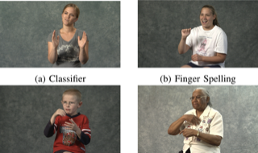
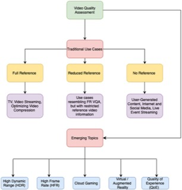

|
Ramit Pahwa I'm a Senior Research Engineer at Rivian and Volkswagen Group Technologies in Palo Alto, working on speech, multimodal AI and post-training. I lead a team of four engineers and scientists on production wake word detection across Rivian, Porsche, Bentley, and Audi, and architect an internal full-duplex speech-to-speech system. I also lead post-training of a 30B omni foundation model for in-vehicle spoken dialogue, with further contributions to on-device multilingual ASR and production text-to-speech. Before that I was a Machine Learning Scientist at Secta.ai, working on diffusion models and LLM-based image quality assessment, and a Software Engineer (ML) at Adobe on Acrobat's mobile ML platform. I did my M.S. in Computer Science at UT Austin, where I worked on video quality assessment in the LIVE Lab with Prof. Alan Bovik, and my integrated B.S./M.S. in Mathematics and Computing at IIT Kharagpur. |

|
Rivian & Volkswagen Group TechnologiesSelected industry work in speech and multimodal AI, spanning production wake words, full-duplex conversation, multilingual speech recognition, and decision-making models. |
|
Production Keyword Spotting & Wake Word Detection
Project Lead I lead a team of four engineers and scientists to deliver production-ready keyword spotting models across Rivian, Porsche, Bentley, and Audi. This work powers in-vehicle wake word experiences and has led to several patent filings. |
|
|
Full-Duplex Speech-to-Speech Models
Architect & Project Lead I architect and lead development of an internal full-duplex speech-to-speech system end to end, including cloud infrastructure, model training, conversation dataset curation, and data pipelines. My speech model work also includes native tool calling and leading post-training of a 30B omni foundation model for spoken dialogue. |
|
|
On-Device, LLM-Enhanced Multilingual Speech Recognition
Core Contributor I developed the team’s first on-device, LLM-enhanced ASR model for multilingual speech recognition, bringing language model context into speech recognition in the vehicle. |
|
Decision |
Internal Decision-Making Models
Core Contributor I am a core contributor to the development of an internal decision-making model. |


Ongoing ResearchI also lead the following research efforts:
|
ResearchI work on speech and multimodal AI: post-training voice-language models for spoken dialogue, evaluating what they actually hear, and making speech models small enough to run on-device. Earlier I worked on perceptual video quality assessment, and on compressing and distilling neural networks. |
|
VoiceLongMemEval: Do Assistants Remember How You Sounded?
Ramit Pahwa*, Parivesh Priye, Apoorva Beedu (* equal contribution) arXiv, 2026 (submitted to NAACL 2027) arXiv A long-horizon conversational memory benchmark in which every answer depends on paralinguistic metadata (emotion, prosody, voice events) attached to the turns, filtered by a three-stage adversarial gate so that a strong language model fails given the transcript alone. Frontier models show a pervasive affect gap: adding the paralinguistic track lifts accuracy by 0.09 to 0.38, while standard ASR pipelines discard the signal entirely. |
|
λ-GRPO |
λ-Controlled GRPO: Turning Flow-Matching Ratio Instability into a Budgeted Resource
Yufeng Wang, Parivesh Priye, Meeshawn Marathe, Ramit Pahwa arXiv, 2026 (submitted to ICLR) arXiv / paper A reinforcement learning method for aligning flow-matching image generators. It uses predicted path variance to control importance-ratio instability and allocate gradient effort across denoising steps, improving text rendering and preference rewards in the paper’s experiments. |
|
Audio2Tool: Speak, Call, Act — A Dataset for Benchmarking Speech Tool Use
Ramit Pahwa*, Apoorva Beedu*, Parivesh Priye, Rutu Gandhi, Saloni Takawale, Aruna Baijal, Zengli Yang (* equal contribution) Interspeech, 2026 project page / arXiv / dataset / code About 30,000 spoken tool-calling queries across smart car, smart home and wearables, organized in a reasoning hierarchy from single-intent calls to needle-in-a-haystack extraction, with realistic acoustic variation from zero-shot voice-cloning TTS and noise. SpeechLM and ASR-plus-LLM baselines expose the gap between text and audio tool calling. |
|
|
 |
LIVE-ASL: Subjective and Objective Quality Assessment of American Sign Language Videos
Sandeep Mishra, Shashank Gupta, Ramit Pahwa, Margaret H. Pinson, Alan C. Bovik IEEE Transactions on Image Processing, 2026 project page / database A public video quality database of 358 compression-distorted American Sign Language videos, built from 149 signed messages by 21 signers and rated for both intelligibility and quality by 42 Deaf and Hard of Hearing volunteers. Existing VQA models leave significant room for improvement on sign language video. |
|
 |
Perceptual Video Quality Assessment: The Journey Continues!
Avinab Saha*, Sai Karthikey Pentapati, Zaixi Shang, Ramit Pahwa*, Bowen Chen, Hakan Emre Gedik, Sandeep Mishra, Alan C. Bovik (* equal contribution) Frontiers in Signal Processing, 2023 paper A survey of perceptual video quality assessment: full-, reduced- and no-reference models, the subjective databases behind them, and emerging topics such as HDR, high frame rate, cloud gaming and AR/VR. |

|
Model Blending for Text Classification
Ramit Pahwa, Surya Dwivedi, Jayanta Mukhopadhyay, Sunav Choudhary, Vishwa Vinay arXiv, 2022 (Master's Thesis, IIT Kharagpur & Adobe Research) arXiv / paper / thesis Blending in complementary knowledge from an LSTM teacher lets us train CNN students for text classification that are up to 15x faster at inference, while being more accurate than the same CNN trained directly on the data. |

|
Data-Driven Compression of Convolutional Neural Networks
Ramit Pahwa, Manoj Ghuhan Arivazhagan, Ankur Garg, Siddarth Krishnamoorthy, Rohit Saxena, Sunav Choudhary arXiv, 2019 (Adobe Research) arXiv / code Reinforcement learning over architecture search, combined with knowledge distillation, compresses trained CNNs such as VGG and ResNet automatically, exposing the trade-off between speed, memory and accuracy and exploiting the fact that a deployed model may only need a subset of the classes. |

|
LSTMs with Attention for Aggression Detection
Nishant Nikhil, Ramit Pahwa, Mehul Kumar Nirala, Rohan Khilnani TRAC Workshop, COLING, 2018 paper / code An LSTM with an attention unit for the shared task on aggression identification in Facebook posts and comments, ranking 6th and 4th on the two Hindi subtasks. |

|
Identification of Hip Dysplasia in Infants
Ramit Pahwa, Dana Cobzas Research Internship, University of Alberta, 2017 (poster, UoA Symposium) An end-to-end training regime for infant hip ultrasound that first localizes the femoral head with a Faster R-CNN and then segments it with a U-Net, built on a collected and cleaned set of high-dimensional MRI images. |
Patents |
Wake Word Detection, 2025 (filed)
Two-Stage Wake Word Detection, 2025 (filed) Contextual Cabin Noise Suppression, 2025 (filed) Diffusion-Based 2D Animation Creation Using Text Prompts, 2023 (approved) Transformers for In-Application Text-Based Reading, 2021 (approved) |


|
Design and source code from Jon Barron's website. |